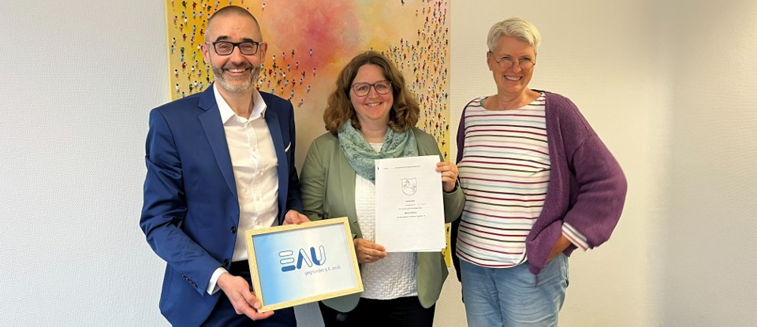

Entwicklungsinstitut für angewandten Umweltschutz gUG iG
Wissenschaftliche Exzellenz, praktische Umsetzung und nachhaltige Innovationen für Wasserwirtschaft, Kreislaufwirtschaft und Klimaschutz.

Kurzbeschreibung der fachlichen Schwerpunkte, Erfahrungen und Kompetenzen.
Kurzbeschreibung der fachlichen Schwerpunkte, Erfahrungen und Kompetenzen.
Kurzbeschreibung der fachlichen Schwerpunkte, Erfahrungen und Kompetenzen.
Die Herausforderungen des Klima- und Ressourcenschutzes erfordern neue Wege des Wissens- und Technologietransfers zwischen Forschung, Wirtschaft, Kommunen und Gesellschaft.
Mit der Gründung der EAU möchten wir wissenschaftliche Erkenntnisse schneller in die praktische Anwendung überführen und gleichzeitig innovative Lösungen für die Wasser- und Kreislaufwirtschaft fördern.
Als gemeinnützige Organisation verfolgen wir das Ziel, Forschung, Bildung und Umsetzung miteinander zu verbinden und dadurch einen messbaren Beitrag zu nachhaltigen und resilienten Infrastrukturen zu leisten.
Unsere Arbeit basiert auf wissenschaftlicher Qualität, interdisziplinärer Zusammenarbeit und dem Anspruch, nachhaltige Lösungen für kommende Generationen zu entwickeln.